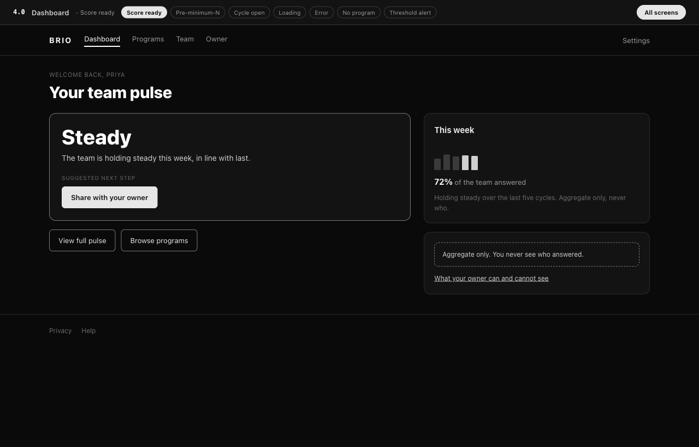
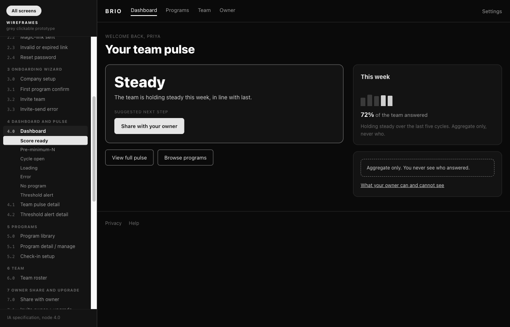

Wireframes
A grey clickable prototype of the whole product, built from the IA Detail Layer. Enter by flow to click a path through, or read the coverage map below. Nothing is invented here: text, components, and states come from the IA. This hub is the single coverage tracker; each screen lights up as its wireframe lands.
Enter by flow
The four product flows from ia/docs/flows.md. Flow 1 is assembled first; the rest roll out at Step 8. Base state plus every real state, each its own page.
Full coverage map
Every product screen by IA cluster. Solid = wireframe built (with its state-page count); dashed and tagged IA = still specification only (links to the IA spec).
The grey contract
The rules every screen in this folder is built against. Full text with examples: wireframes/docs/conventions.md. This folder is frozen after Voice: stages 06 and later work on coloured copies in design/, never here.
Was to now
What the critique of this stage caught and what happened to it. The full defect log is wireframes/docs/critique.md; the retrofit rows are in docs/retrofit-audit.md. Every row carries a status, so the next stage does not start fixing what is already fixed.
home.html, a file that no longer exists. Now: index.html, the product home, node 0.0. Who found it: Codex, in a class the rename script missed systematically: a filename inside markdown backticks. Status: fixed.home.html among the IA basenames while the folder rule says index.html is the home page. Verdict: withdrawn at verification, the sentence is about IA basenames and ia/home.html does exist. A clarifying line was added instead of changing a correct fact. Who found it: Codex. Status: withdrawn, clarified.conventions.md was read by the model and by nobody else. Now: the grey contract section above. Who found it: Claude. Status: fixed.ui-visual/. Now: design/. Who found it: Claude, script. Status: fixed.The pair that shows it

